MQTT is a widely used protocol in the IoT world. It is a lightweight pub/sub messaging system, with a small code footprint and minimal bandwidth requirements, which makes it ideal for connecting remote small devices. To implement the MQTT protocol you need a robust broker service to handle the connections and the messages transportation.
RabbitMQ is one of the most popular message brokers in the market. It is easy to deploy and solves all kinds of messaging requirements at small and large scales. RabbitMQ supports different kinds of messaging protocols. One of them is MQTT.
I like RabbitMQ. It has always served me well in pub/sub and queueing scenarios. And because it is so popular, chances are you already have an instance running in your stack. RabbitMQ’s main protocol AMQP offers more flexibility than standard MQTT to create data pipelines at scale. By Implementing MQTT with RabbitMQ you can crossover to the AMQP world and leverage its features.
While there are all kinds of software products to implement an MQTT broker, in this article, I will show you how to implement a robust, scalable, and flexible MQTT solution using RabbitMQ as the broker. But first, let’s take a look at some of the basic concepts.
MQTT - The IoT messaging protocol 🔗
MQTT — Message Queuing Telemetry Transport — protocol is the favorited publish/subscribe messaging protocol for Internet of Things (IoT) solutions. It is designed as publish/subscribe messaging transport with very useful features like topic hierarchies, quality of service, persistent connections, retained messages, and connection’s “Last Will and Testament”, among others.
Publishers, Subscribers, Messages, and Topics 🔗
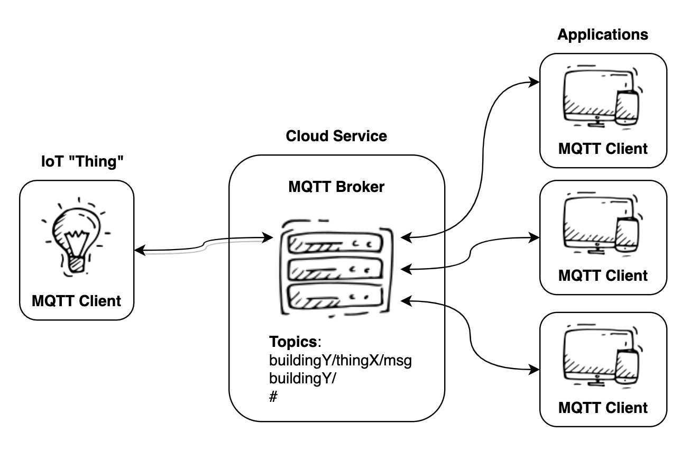MQTT Clients subscribe to topics to receive messages of interest. The topics are organized in hierarchical paths: a/b/c/d. The subscriptions can be specified using wildcards to tap messages at different levels of the topic hierarchy.
Some typical examples of topic subscriptions look like these:
Subscribe to the readings of sensor X from machine B in building A:
buildingA/machineB/sensorX/temp
Subscribe to all the messages from building A:
buildingA/#
Subscribe to all the temp readings from all sensors on all machines in building A:
buildingA/+/+/temp
Give me all the messages from all topics:
#
Publishers connect to the broker and deliver messages on specific topics for example a/b/c/d. There is no need to set up a topic, publishing on the topic is enough to create it. There are no wildcards for publishing but you can publish to any level in the path.
The protocol is bidirectional. Clients can receive and publish on any topic they have access to. Every client can specify certain properties of the connection to control the pub/sub behavior: like the QoS or the “Will and Testament”.
QoS 🔗
One very important concept in MQTT is the Quality of Service (QoS) of the pub/sub connections. MQTT defines three incremental levels, from 0 to 2. Higher levels of QoS are more reliable but involve higher latency and complexity:
0: The broker/client will deliver the message once, with no confirmation.
1: The broker/client will deliver the message at least once, with confirmation required.
2: The broker/client will deliver the message exactly once by using a four step handshake.
Client ID 🔗
In MQTT, clients connect with a unique ID that is associated with the subscriptions. The client ID is used to resume subscriptions when operating at QoS > 0. If a new client connects with a client id that is already in use, the oldest connection will be terminated. Always make sure that different clients or subscriptions have different client Ids.
For more details about the MQTT protocol, I recommend you to visit https://www.hivemq.com/blog/mqtt-essentials-part-1-introducing-mqtt and http://mosquitto.org/man/mqtt-7.html
RabbitMQ 🔗
RabbitMQ is one of the most popular message brokers in the market. It is easy to deploy and solves all kinds of messaging requirements at small and large scales. RabbitMQ’s primary protocol is AMQP (Advanced Message Queuing Protocol), but it also supports MQTT.
A little about AMQP 🔗
In AMQP, messages are published to exchanges. Exchanges then route message copies to queues using rules called bindings that use header attributes and routing keys to route messages. Then the broker either delivers messages to consumers subscribed to queues, or consumers fetch/pull messages from queues on demand.
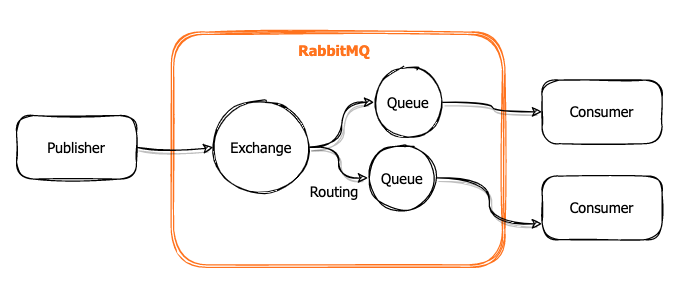
There are different types of exchanges that support different distribution or routing rules.
- Direct exchange: delivers messages to queues based on the message routing key.
- Fanout exchange: every queue bound to the exchange receives every message.
- Topic exchange: messages are routed to queues based on the routing key pattern defined in the binding.
- Headers exchange: similar to the topic exchange but it uses the message headers for the pattern matching.
A great article about Exchanges and Routing: https://www.cloudamqp.com/blog/part4-rabbitmq-for-beginners-exchanges-routing-keys-bindings.html
Virtual Hosts 🔗
Virtual Hosts (vhosts) are how RabbitMQ implements multi-tenancy. Exchanges, queues, bindings, and user privileges belong to specific Virtual Hosts. Vhosts are a good way to isolate data and functionality. The default vhost is the root (empty) virtual host. Learn more about vhosts here: https://www.rabbitmq.com/vhosts.html
RabbitMQ offers a great deal of control over the queues, exchanges, and messages. It supports rules like queue durability, message TTL, exclusivity, replication, and more. You will find more details about RabbitMQ and the AMQP Protocol here https://www.rabbitmq.com/tutorials/amqp-concepts.html
Why use RabbitMQ for MQTT? 🔗
In a word: flexibility. The MQTT protocol is designed to be light and simple and provides great guarantees for message delivery. However, it is limited to only one type of pub/sub mechanism. AMQP on the other hand, give us a great deal of flexibility with the different exchange types, message headers, and other useful features.
With RabbitMQ we can have the best of both worlds. We can connect remote MQTT clients to deliver and receive messages efficiently on one end, and we can make use of the different exchange types, routing, and other messaging features with AMQP clients on the other end. It is easy to deploy scalable, highly available brokers with RabbitMQ.
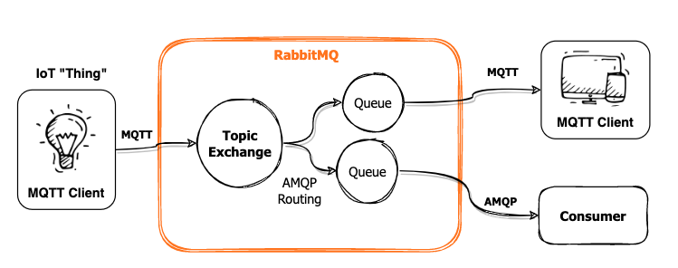
MQTT Plugin 🔗
Support for MQTT in RabbitMQ is provided by a Protocol Plugin: https://www.rabbitmq.com/mqtt.html. Since RabbitMQ 3.0.0, the plugin implements MQTT 3.1.1 with QoS0 and QoS1, TLS connections and authentication, durable sessions, last will, and retained messages. Thanks to this plugin the MQTT clients can interoperate with the AMQP protocol.
To work with MQTT you need to be aware of how the protocol relates to AMQP in RabbitMQ:
- MQTT clients publish messages to the Topic Exchange
- The MQTT Topic is translated to a Routing Key for every message.
- MQTT Topic paths change from forward slash to dot notation:
a/b/c—>a.b.c - RabbitMQ attaches a few headers to every message
- Every MQTT subscription will create a queue and binding to the Topic exchange. The attributes of the queue will depend on the subscription QoS.
- RabbitMQ requires MQTT clients to specify
vhost:userfor authentication.
Read https://www.rabbitmq.com/mqtt.html#implementation for more details.
Implementing an MQTT service with RabbitMQ 🔗
The first thing to do is to get an instance of RabbitMQ with the MQTT plugin enabled. The plugin comes already bundled in the base package, we just need to enable it.
For this article, I’ll use a managed instance of RabbitMQ provided by CloudAMQP. I like their service. I’ve been using it in production for a few years now. It allows me to do my testing with secured connections — something I highly recommend— and their free tier comes with the MQTT plugin already enabled.
However, if Docker is your thing, I prepared a Dockerfile for you to work locally. It includes the MQTT and other interesting plugins.
FROM rabbitmq:3.9-management-alpine
RUN rabbitmq-plugins enable --offline rabbitmq_management rabbitmq_mqtt rabbitmq_federation_management rabbitmq_shovel rabbitmq_shovel_management
You can run the container like this:
# Build the image
docker build -t rabbitmqtt:local .
# Run the container with port 8888 for Management UI, 1883 for MQTT, and 5672 for AMQP
docker run -d --hostname my-rabbit --name rabbitmqtt -p 8888:15672 -p 1883:1883 -p 5672:5672 rabbitmqtt:local
# Check the list of plugins
docker exec rabbitmqtt rabbitmq-plugins list
By default, the container creates an admin user with credentials: guest/guest.
Go to the RabbitMQ Management UI (http://localhost:8888 in your container) to verify everything is working fine.
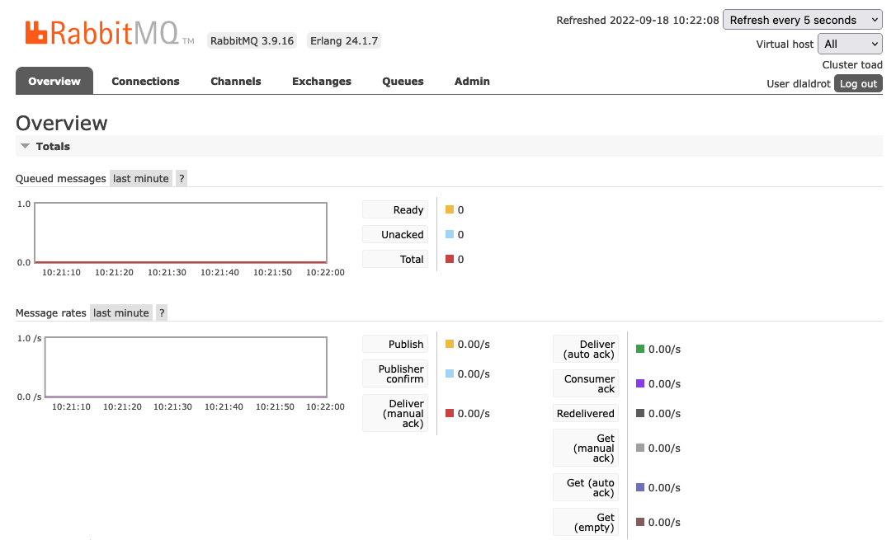
A good guide on the Management UI: https://www.cloudamqp.com/blog/part3-rabbitmq-for-beginners_the-management-interface.html
Let’s verify that we can connect with MQTT clients to our RabbitMQ instance. I am going to use mosquitto, but you can use your preferred brand.
Get your connection credentials ready. For the local container the connection parameters will look like this:
- Host: localhost
- Port: 1883 (plain)
- User: guest (vhost not necessary for the root)
- Password: guest
- Client id: test.sub
- Topic: “my/topic”
# connecting to the topic "my/topic" in vhost "root" with user "guest", and client id "test.sub" on port "1883" (unsecured)
# qos = 0
mosquitto_sub -h localhost -d -t "my/topic" -u guest -P guest -c -i test.sub -q 0 -p 1883
For my managed instance, I can use a secure connection parameters:
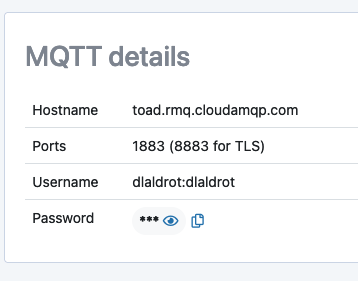
Remember that in RabbitMQ, if you are connecting to a vhost, the username for the MQTT connection is formed by joining the virtual host and the user:
vhost:user.
# connecting on TLS port 8883
mosquitto_sub -h ${RABBITMQ_HOST} -d -t "my/topic" -u ${RABBITMQ_USER} -P ${RABBITMQ_PWD} -c -i test.sub -p 8883 -q 0
Now let’s publish a simple message to test our subscription.
# To local docker
mosquitto_pub -h localhost -t "my/topic" -u guest -P guest -c -i test.pub -q 0 -p 1883 -m "hola mundo"
# To managed RMQ (TLS)
❯ mosquitto_pub -h ${RABBITMQ_HOST} -d -t "my/topic" -u ${RABBITMQ_USER} -P ${RABBITMQ_PWD} -i test.pub -q 0 -p 8883 -m "hola mundo"
You should see the message coming down to the subscriber:
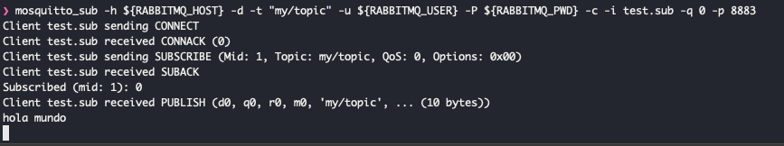
It is very important that the client id for the subscriber and the publisher are different. I cannot tell you how many problems are often caused by duplicated client ids.
How it works 🔗
Let’s take a look at what is happening in RabbitMQ because of the MQTT connections. We can use the Management UI.
MQTT Subscriptions and AMQP Queues 🔗
The first important thing to notice is how an MQTT subscription creates a new queue in RabbitMQ automatically. The queue features depend on the subscription QoS. See what happens when we subscribe the MQTT client with QoS=0.
# Connecting with QoS 0
mosquitto_sub -h ${RABBITMQ_HOST} -d -t "#" -u ${RABBITMQ_USER} -P ${RABBITMQ_PWD} -c -i test.sub -p 8883 -q 0
A new queue is automatically created with the name pattern mqtt-subscription-{client id}{qos}
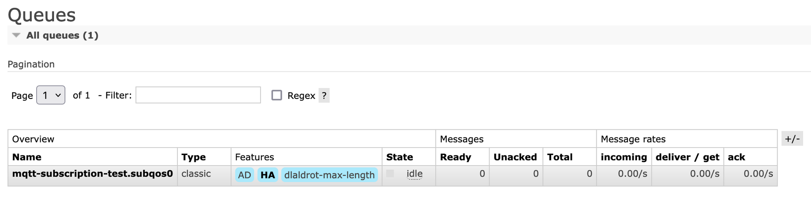
The queue is set with auto-delete:true which means it will be deleted when the client disconnects.
Note that the queues are only created by subscribing to a topic. Publishing does not create queues since the client publishes to the exchange, not a queue.
Subscribing with QoS1 causes the queue to be created as “Durable”, but with an expiration.
# Connecting with QoS 1
mosquitto_sub -h ${RABBITMQ_HOST} -d -t "#" -u ${RABBITMQ_USER} -P ${RABBITMQ_PWD} -c -i test.sub -p 8883 -q 1
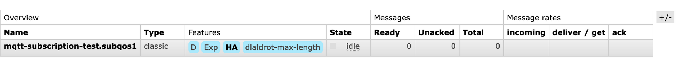
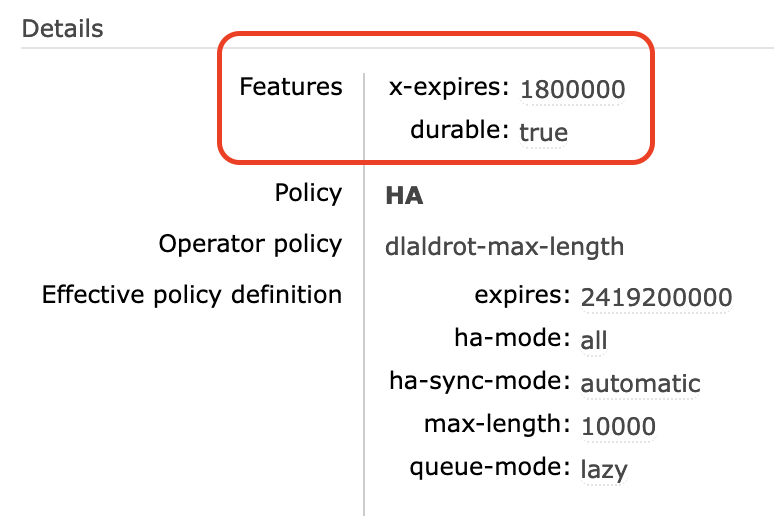This means the queue does not disappear when the client disconnects, but more importantly, it will keep accumulating the messages that are being published, up to the expiration time. When the client reconnects, the pending messages in “ready” state will be delivered.
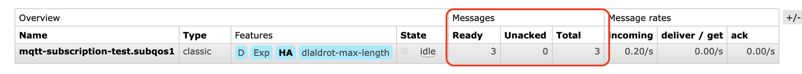
The expiration of messages can be controlled with custom Policies or with the client parameter
persistent_client_expiration. See the MQTT documentation for more information.
Topics and Bindings 🔗
For every subscription a new binding to the Topic Exchange amq.topic is created inside the queue. The binding is set to match the routing key with the topic pattern.
Subscribing to "my/topic" creates a binding for routing key equal to "my.topic"
Subscribing to all topics "#", creates a wildcard binding.
Crossing over to AMQP 🔗
Now that you have a standard MQTT service going, is time to leverage RabbitMQ and the AMQP protocol features. We can play around with queues, exchanges, and bindings to move our data in different ways. Let’s take a look at some use cases.
Retain messages in a custom queue 🔗
Sometimes you want to be able to retain the messages for AMQP clients in a way that doesn’t depend on the MQTT connections. For this, you can create a custom queue that pulls the messages directly from the Topic Exchange and applies its own rules.
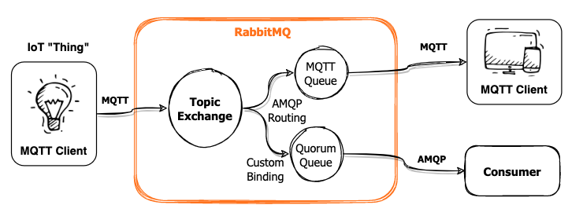
First, we create a Quorum Queue for high availability:
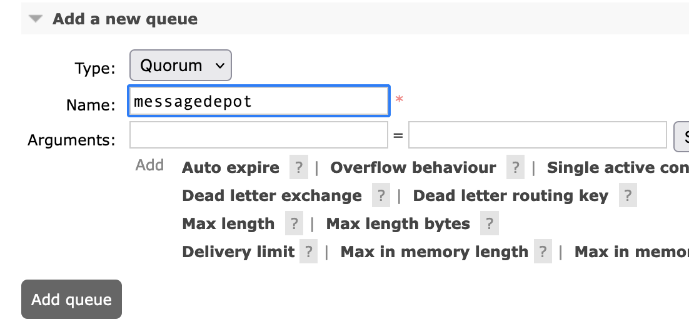And we add a binding to get a copy of all messages (all topics) from the Topic Exchange (amq.topic) into this queue:
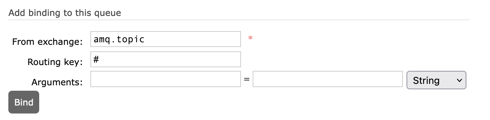
Now, as the messages come in, a copy of every message will be sent to our new queue messagedepot even if there is no active MQTT subscriptions.
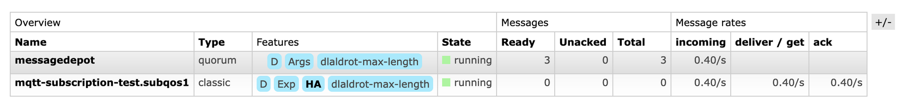
From this queue you can take the messages with any other supported client protocol like AMQP or Websockets. Here I use the AMQP client raptab to pull the messages from our custom queue:
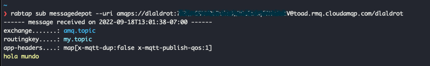
I recommend you take a look at rabtap if you haven’t already. It is a very useful RabbitMQ client: https://github.com/jandelgado/rabtap/
Move messages to another exchanges 🔗
RabbitMQ has another cool feature called Shovels. Shovels let you move messages between queues, exchanges, and even clusters. In a way, shovels are like internal client applications that consume and publish messages with well-defined rules. To work with shovels you need the RabbitMQ Shovel plugin. To learn more about Shovels go here https://www.rabbitmq.com/shovel.html
CloudAMQP free tier supports shovels by default, and we enabled it in our Docker image example.
Create a new Shovel to move messages from the Topic Exchange to the Fanout Exchange.
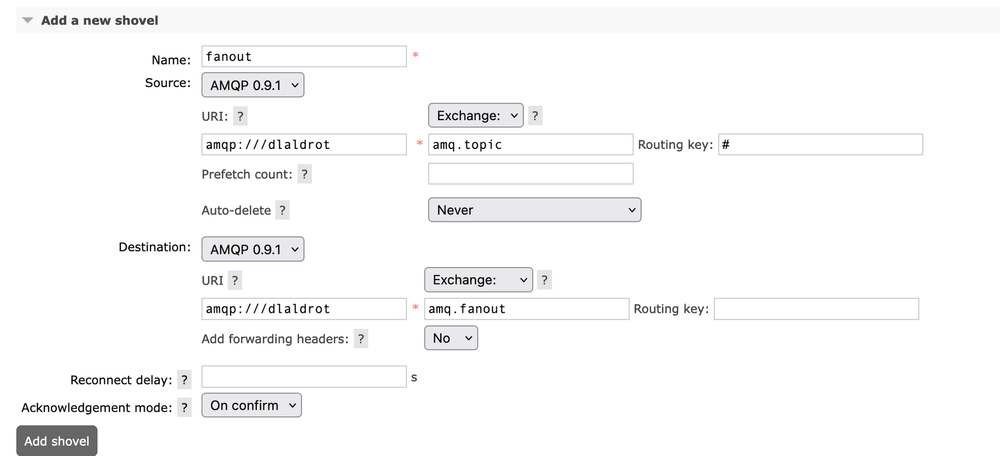
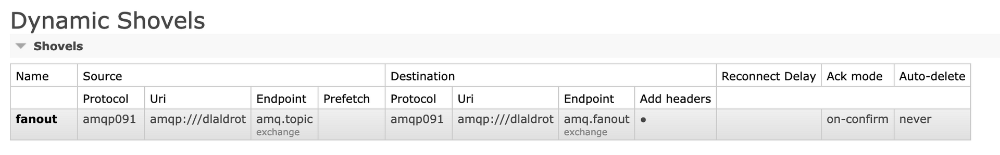
The shovel creates a dynamic queue (amq.gen-******) that is used to receive the messages from the source exchange and move them to the destination. You don’t have to worry about this queue, it is handled automatically by RabbitMQ.
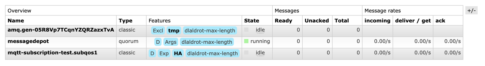
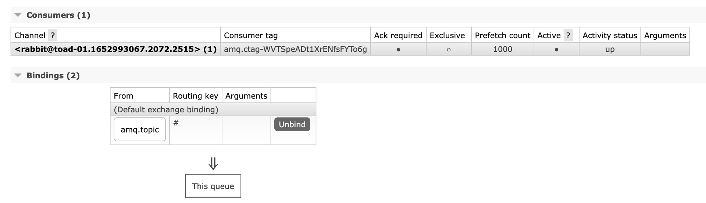
Let’s create a couple of queues to receive the fanout messages. We will call them fanout01 and fanout02. We will also add a TTL policy to these queues to avoid saturation.
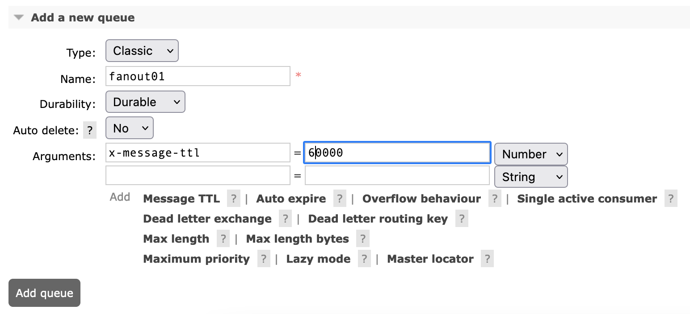
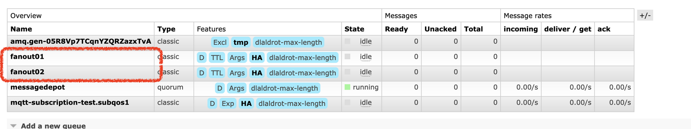
Finally, we bind these new queues to the Fanout Exchange to receive the messages. The fanout binding does not require routing keys.
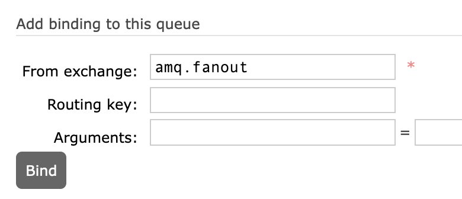Now, if we push some messages through or MQTT client we see all the pieces working together:
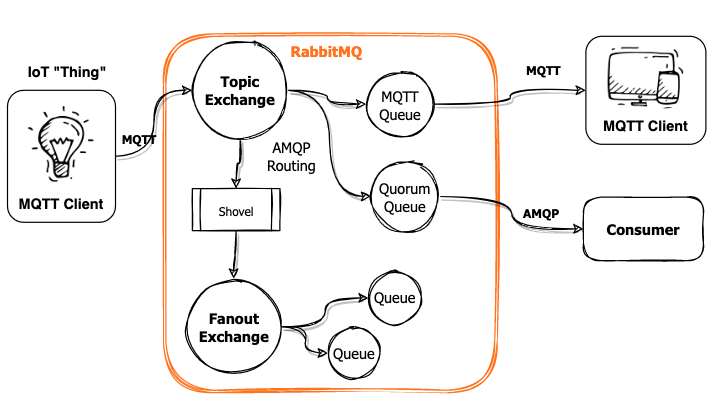
We publish 3 messages to the my/topic topic:
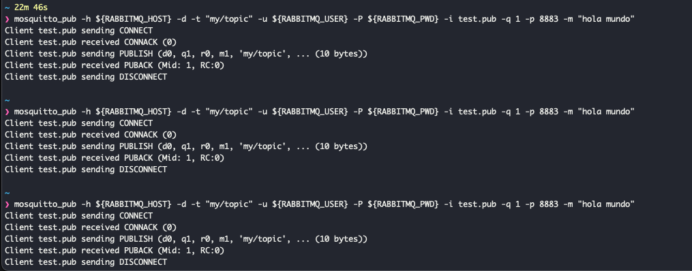
A regular MQTT client will receive its copy of every message immediately:
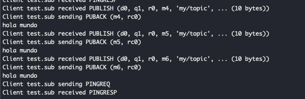
The messages are copied to our custom Quorum queue messagedepot from the Topic Exchange using the queue’s binding rule. We can use rabtap to consume those messages later.
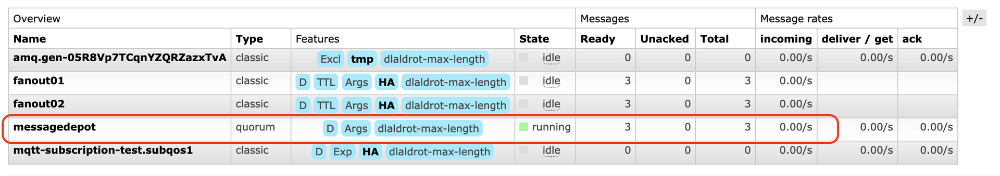
The messages are also copied to the fanout queues thanks to the shovel we set up. The fanout binding in the destination queues receive a copy of every message automatically. The messages will linger in there until a consumer pulls the data or the TTL is reached.
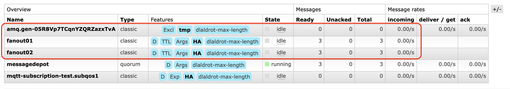
Publish with AMQP and receive via MQTT 🔗
So far all the examples we have seen start with an MQTT client publishing messages. But everything about MQTT and AMQP is bidirectional. We can use an AMQP client to publish to the Topic Exchange so that the subscribed MQTT clients can receive the messages.
If we use rabtap to publish directly to the amq.topic exchange with the routing key my.topic
❯ echo "hello back" | rabtap pub --exchange=amq.topic --routingkey=my.topic --uri amqps://${RABBITMQ_USER}:${RABBITMQ_PWD}@${RABBITMQ_HOST}/${RABBITMQ_VHOST}
We see the MQTT client receiving the messages immediately on the “my/topic” topic:
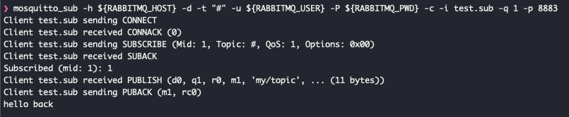
Conclusions 🔗
MQTT is an excellent protocol for the Internet of Things. It is lightweight, with a small code base and well-suited for low bandwidth or unreliable connections.
RabbitMQ is one of the most popular messaging brokers in the market. It offers more flexibility with message handling and routing options. It also supports multiple protocols, including MQTT.
By implementing the MQTT broker service with RabbitMQ you gain the possibility to cross over to the AMQP world and build flexible and stable data pipelines.
I hope you find this article useful and it can save you some time.